Cả 3 hướng cùng 23 giây, cùng lời Emma, cùng nền tối có quầng tím của bản A. Chỉ khác cách đưa 3 quảng cáo son lên hình. Anh chọn một hướng, hoặc ghép (ví dụ mở của hướng 3 + kết của hướng 2). Ảnh là tham chiếu lấy từ Pinterest 05/11, bấm ảnh để mở trang tìm.
| 0,0–0,5 | Màn đen |
| 0,5–4,9 | "Look at these three lipstick ads. Which one cost the most to film?" |
| 5,3–10,2 | "The first one has studio light and a slow camera move around the gold cap." |
| 10,6–14,5 | "The second is a creator testing the shade on her own lips." |
| 14,9–18,9 | "The third is a macro shot, close enough to see the texture." |
| 19,3–21,5 | "Take a second. Pick one." |
| 21,5–23,0 | Im lặng để người xem chọn, rồi sang SC02 "None of them were filmed. And neither was I." |
Ba chiếc điện thoại đứng nghiêng trong không gian tối, mỗi máy đang chạy một quảng cáo như lướt feed. Emma nói tới quảng cáo nào thì máy quay đẩy sát vào màn hình máy đó, hai máy kia chìm vào bóng tối. Tới "Pick one" thì máy lùi ra, ba điện thoại xếp hàng, mỗi máy hiện chữ cái A / B / C.
Hợp vì: người xem thấy quảng cáo ở đúng chỗ họ hay gặp (điện thoại, feed), nên dễ tin là quảng cáo thật. Yếu: đẹp nhưng quen, nhiều kênh dùng mockup điện thoại.
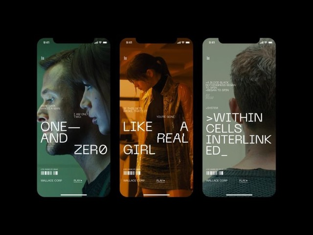
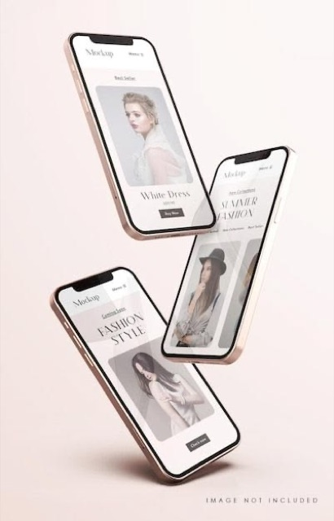
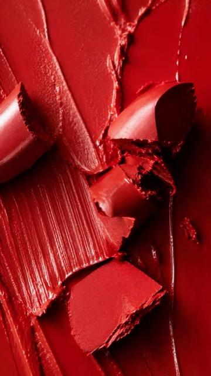
Chữ to "WHICH ONE WAS FILMED?" đập vào từng chữ theo giọng Emma. Ba quảng cáo nằm trong ba thẻ, mỗi thẻ có huy hiệu tròn A / B / C kiểu gameshow. Emma tả quảng cáo nào thì huy hiệu thẻ đó nảy lên và sáng. Tới "Pick one" thì một thanh đếm ngược 3 giây chạy dưới chân ba thẻ, kèm tiếng tích tắc, rồi tắt phụt đúng lúc sang SC02.
Hợp vì: người xem được mời chơi rõ ràng, có đồng hồ ép chọn, nên ở lại xem đáp án. Yếu: chữ "WHICH ONE WAS FILMED?" đã có trong bản L01 Noel cũ, cần đổi chữ hoặc cách đưa chữ.
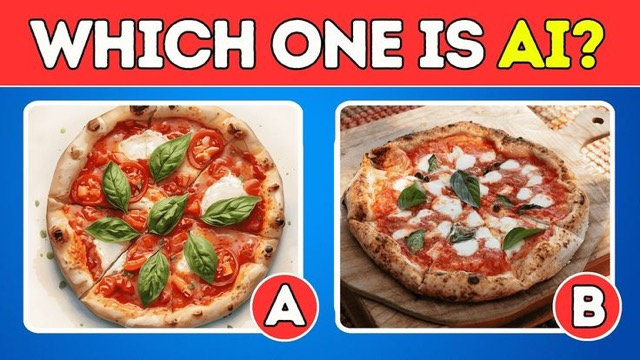
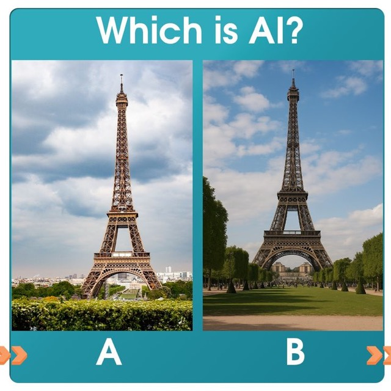
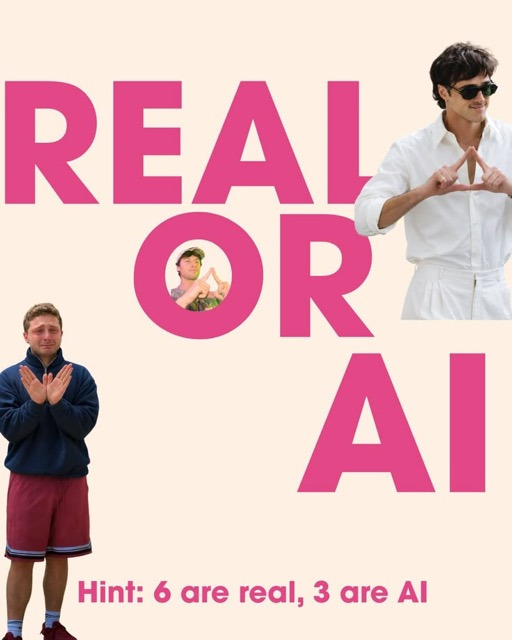
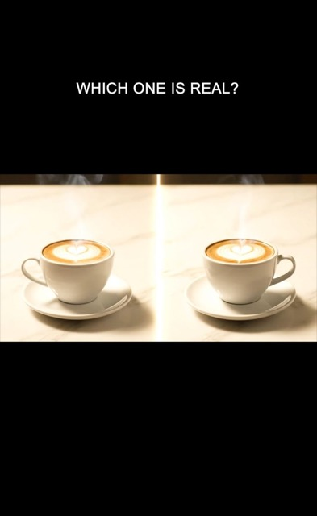
Mỗi quảng cáo mở bằng một tấm bảng clapper đập "SCENE 1 · TAKE 4", tiếp theo 1 giây hậu trường: đèn studio, bóng đoàn quay, chuyên viên trang điểm tô son cho mẫu. Sau đó cắt sang quảng cáo hoàn chỉnh. Ba thẻ ba phim trường khác nhau: studio đèn lớn (quảng cáo 1), phòng ngủ có điện thoại trên chân máy (quảng cáo 2), bàn macro có ống kính sát son (quảng cáo 3). Người xem tin chắc là quay thật, nên SC02 "None of them were filmed" lật mạnh hơn: cả cảnh hậu trường cũng là AI.
Hợp vì: cú lật mạnh nhất trong 3 hướng, và khoe luôn AI làm được cả cảnh "hậu trường". Yếu: cần thêm 3 clip hậu trường (thêm khoảng 3 lượt tạo video GodTools), cảnh có người dễ lỗi tay, mặt.
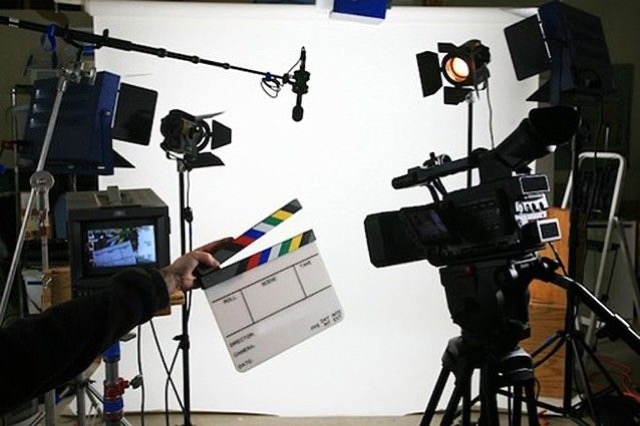
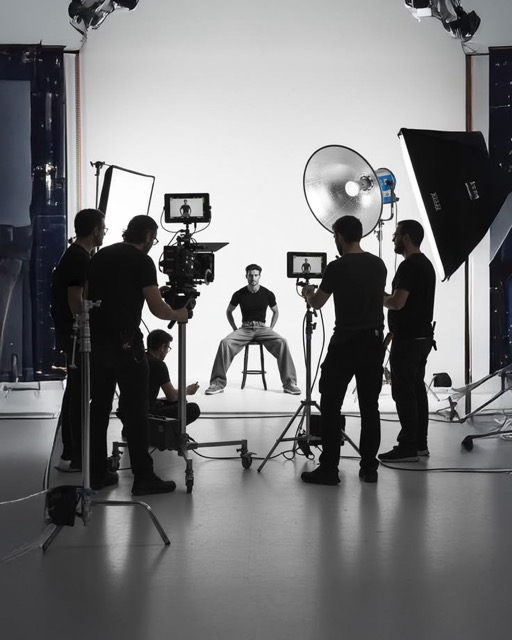
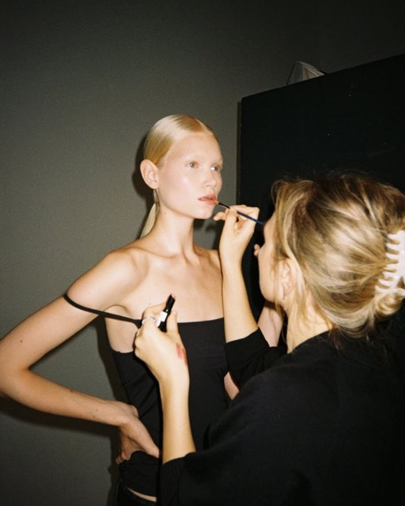
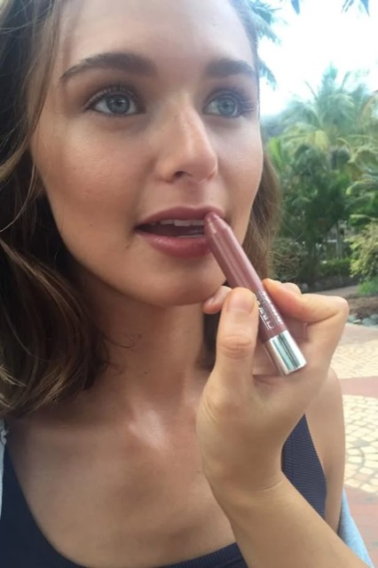
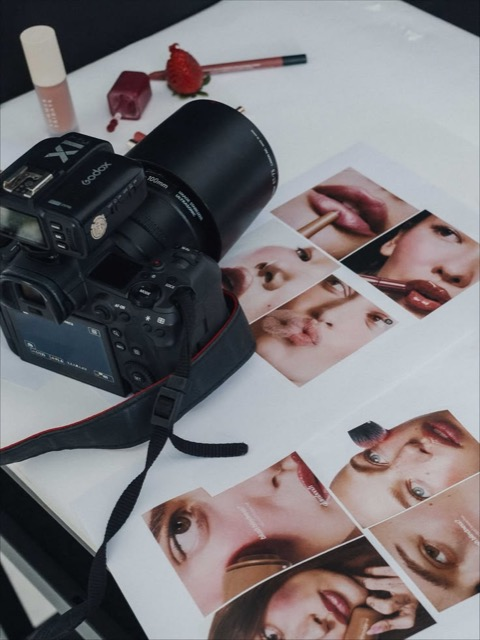
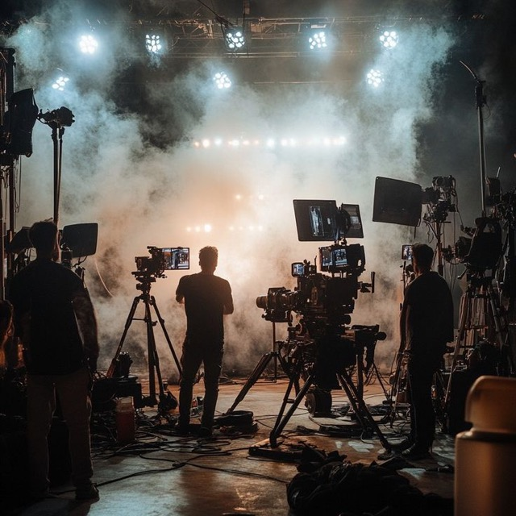
| Hướng 1 Điện thoại | Hướng 2 Gameshow | Hướng 3 Phim trường | |
|---|---|---|---|
| Người xem tin là quay thật | Vừa | Vừa | Cao nhất |
| Cú lật ở SC02 | Vừa | Vừa | Mạnh nhất |
| Mời người xem chơi | Nhẹ | Rõ nhất (đồng hồ) | Vừa |
| Thêm clip GodTools | 0 | 0 | +3 clip hậu trường |
| Trùng video cũ | Mockup điện thoại khá phổ biến | Chữ giống L01 Noel cũ, phải đổi | Chưa có video kênh nào dùng |
Hướng 3 (Phim trường), mượn đồng hồ đếm ngược của hướng 2 cho câu "Pick one". Hậu trường làm người xem tin chắc là quay thật, nên câu SC02 "None of them were filmed" lật mạnh nhất. Đồng hồ thì ép người xem chọn trước khi lộ đáp án.
Bản dựng nháp hiện có trong AE (ba thẻ trên nền tím, dấu "?" nảy) gần với hướng 1 và 2. Anh chọn xong em vá tại chỗ thành bản v3.
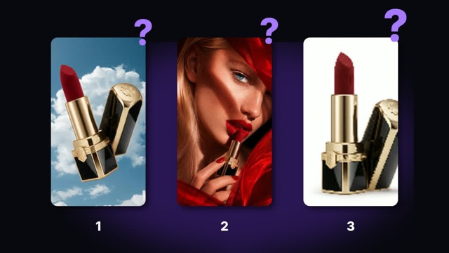